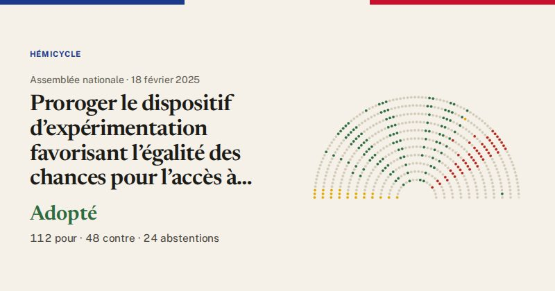

Assemblée nationale · scrutin n°840 · 18 février 2025
Proroger le dispositif d’expérimentation favorisant l’égalité des chances pour l’accès à certaines écoles de service public (vote final, première lecture)
Adopté
112pour
48contre
24abstentions

Le vote de chaque groupe
| Groupe | Pour | Contre | Abst. | Membres |
|---|---|---|---|---|
| La France insoumise (LFI-NFP) | 0 | 0 | 23 | 71 |
| GDR (communistes) | 2 | 0 | 0 | 17 |
| Écologiste et Social | 6 | 0 | 0 | 38 |
| Socialistes et apparentés | 37 | 0 | 0 | 66 |
| LIOT | 1 | 0 | 0 | 23 |
| Ensemble pour la République | 25 | 0 | 0 | 94 |
| Les Démocrates (MoDem) | 12 | 0 | 0 | 36 |
| Horizons & Indépendants | 19 | 0 | 0 | 33 |
| Droite Républicaine | 9 | 1 | 1 | 47 |
| UDR (Union des droites) | 0 | 3 | 0 | 16 |
| Rassemblement National | 0 | 44 | 0 | 124 |
| Non-inscrits | 1 | 0 | 0 | 11 |